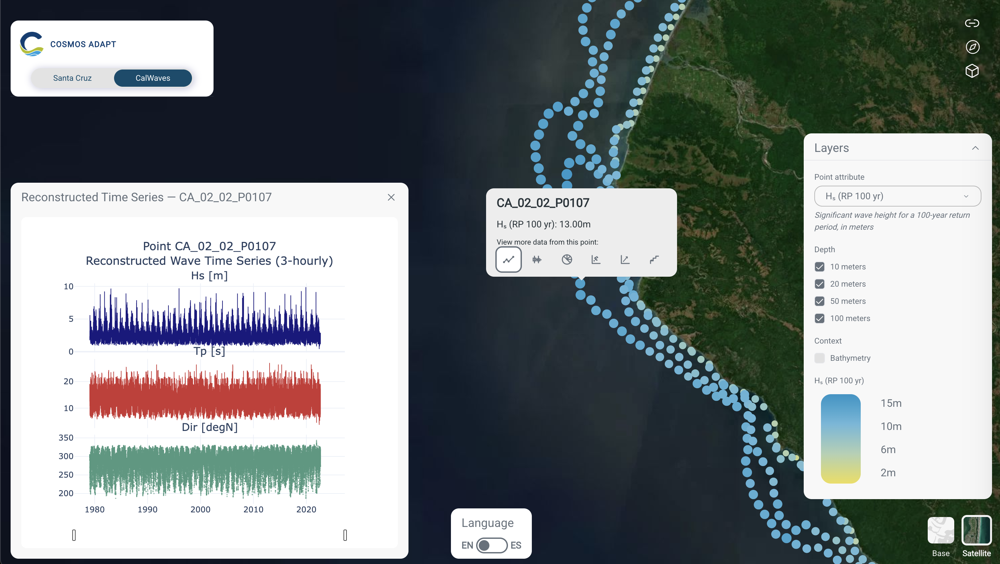
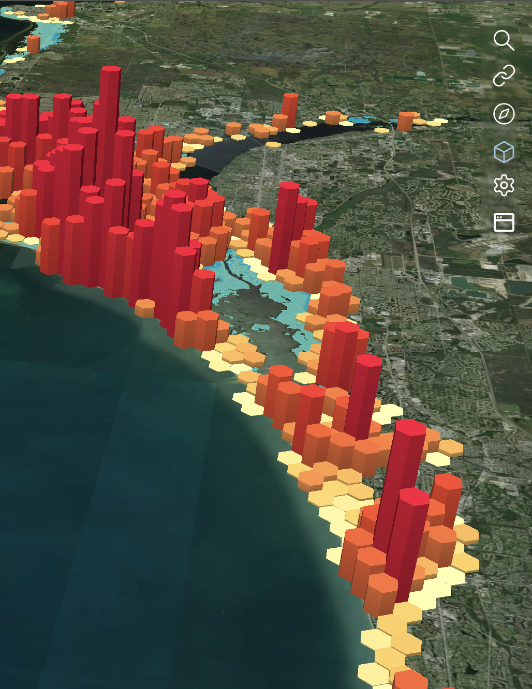
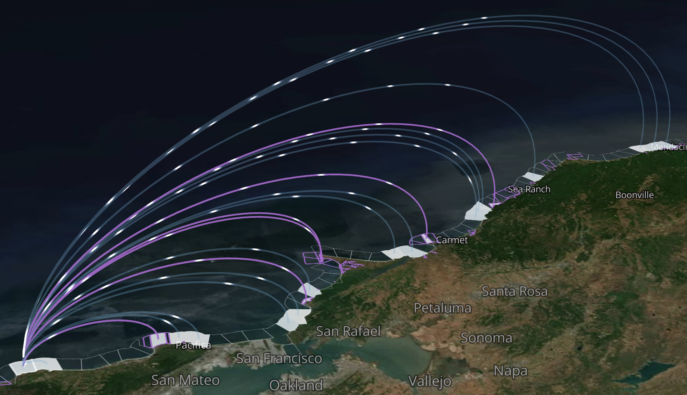
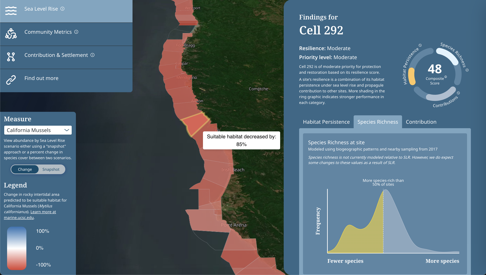
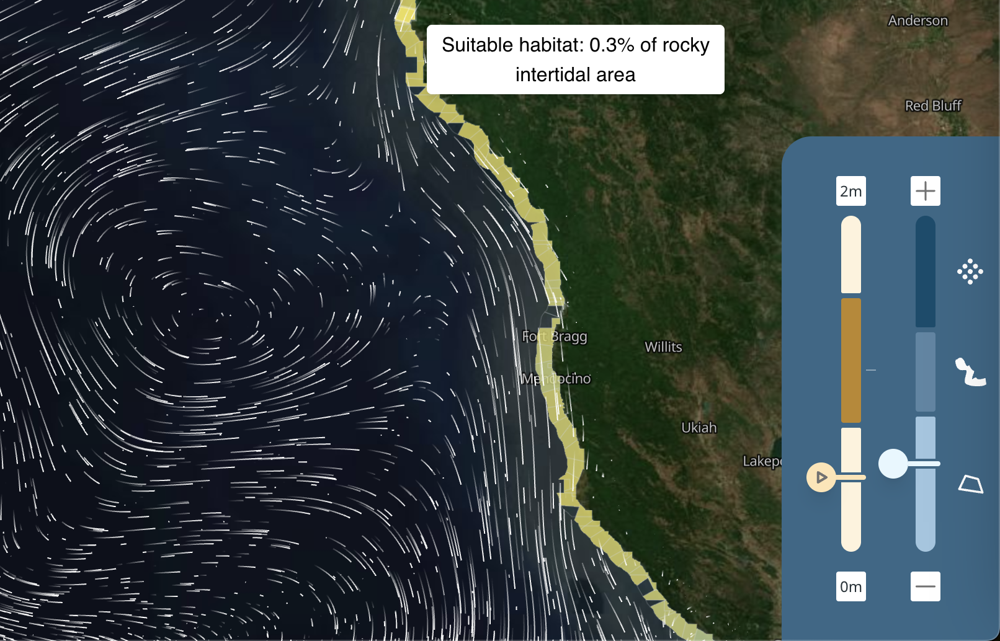

Full-stack and frontend software engineer specializing in
geospatial decision-support tools, climate risk visualization, and
interactive scientific data products.
San Francisco, CA
mccallie.cameron@gmail.com
(917) 858-9583
Interactive climate, coastal risk, and resilience platforms
Recent work focuses on translating complex hazard, ecological, and
socioeconomic datasets into clear, map-based interfaces for
researchers, planners, and humanitarian teams. Projects span
storm-driven coastal flooding, economic impacts, nature-based
adaptation, intertidal species resilience, and operational climate
risk monitoring.

CalWaves Explorer: interactive wave point selection, return-period
layers, and reconstructed 3-hourly wave time-series plots.
UC Santa Cruz
COSMOS Adapts & CalWaves Explorer
Decision-support system for visualizing storm-driven flood risks,
economic impacts, extreme wave events, and sea-level-rise
scenarios along the Santa Cruz coastline.
ReactMapLibrePlotlyCoastal risk
Architected React and MapLibre patterns for maintainable UX,
map layer management, and data-driven interactions.
Built custom interactive Plotly workflows for exploring wave
data across six analytical facets.
Supported visual exploration of hazards across return periods,
time horizons, depths, and local vulnerability contexts.
Focus: making high-dimensional coastal hazard data legible through
clear point interactions, legends, scenario controls, and
chart-linked map exploration.
Nature-based solutions
NBS Adapts
A geospatial decision-support system for quantifying current and
future storm-driven flood risks and valuing how coral reefs and
mangroves reduce risk for coastal communities.
UC Santa Cruz
Frontend Software Engineer
React · MapLibre
Nature-based coastal risk reduction
NBS Adapts quantifies current and future storm-driven flood risks and
values how coral reefs and mangroves reduce risk for coastal
communities. The interface combines flood extents, modeled damages,
habitat layers, climate scenarios, and adaptation assumptions in a
single exploratory workflow.
ReactMapLibreHex layersCoral reefsMangroves
Implemented custom stacked MapLibre hex layers for rendering flood
damage comparisons across multiple complex scenarios.
Designed map UX for toggling consequences, habitats, social and
economic layers, climate assumptions, and habitat-loss scenarios.
Built interfaces that communicate both physical flooding and
dollar-valued damages without overwhelming users.
Focus: comparing outcomes across ecosystem conditions, future climate
assumptions, and nature-based adaptation scenarios.

NBS Adapts: reef-based flood risk reduction visualization comparing
coastal flooding outcomes with and without coral reef protection.
Ecosystems & operations
Intertidal Species DSS & PRISM
Two recent platforms: one focused on ecological resilience and rocky
intertidal habitat change along California, the other on operational
climate risk monitoring and map generation for humanitarian
decision-making.
Decision-support system for exploring changes in rocky intertidal
ecosystems along California’s coast, supporting conservation and
management of species, communities, and habitat.
ReactDeckGLMapLibrePMTiles
Built advanced UX controls for sea-level-rise selection,
ecological measures, snapshot/change modes, legends, and maps.
Implemented bespoke visual components including resilience ring
graphs and Recharts-based explanatory charts.
Developed interactive PMTiles workflows and map-layer architecture
for large coastal datasets.

Intertidal connectivity visualization: regional settlement and
contribution patterns rendered as animated coastal arcs.


World Food Programme
PRISM Climate Risk Monitoring
PRISM integrates hazards such as droughts, floods, tropical storms,
and earthquakes with socioeconomic vulnerability data to inform
disaster risk reduction and social assistance programs.
ReactFastAPIGeoPandasPostgresAWS
Built an authenticated admin dashboard with a custom backend to
support an existing React frontend.
Designed and implemented an async worker and queue process for
generating custom maps.
Supported operational workflows for selecting layers, cadence,
map layout, legends, labels, and future-data products.